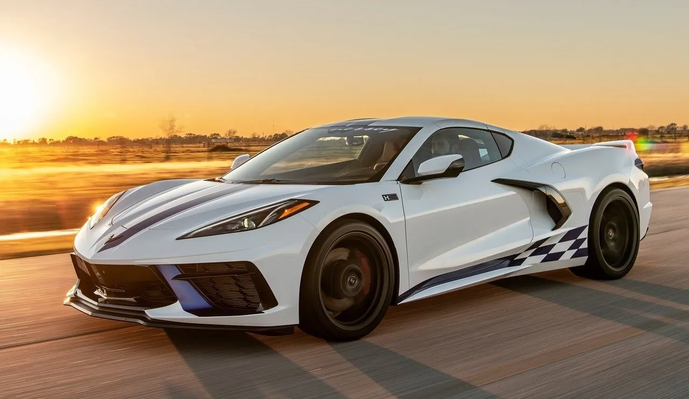

el Nissan Sentra 2.0 EXCLUSIVE AUTO 2020, un sedán que combina elegancia y rendimiento en cada kilómetro. Con transmisión automática, este vehículo te brinda comodidad y estilo en cada viaje. Equipado con luces de niebla delanteras, rin de aleación de 17 pulgadas, y un motor de 2.0 litros con 145 caballos de fuerza, este Nissan te ofrece un equilibrio perfecto entre potencia y eficiencia. Disfruta de su interior con asientos de cuero, aire acondicionado automático, pantalla táctil, Bluetooth, Apple CarPlay y Android Auto, que te mantienen conectado en todo momento. Con 6 airbags, frenos ABS y asistencia de frenado, tu seguridad es nuestra prioridad. Experimenta el confort y la calidad de un auto que obtiene altas calificaciones en consumo de combustible, comodidad y seguridad. ¡Haz tuyo este Nissan Sentra y vive la experiencia de conducir con confianza y estilo!.
Precio al contado:$344,999
Hyundai Santa Fe 2019
SUV espacioso y versátil, perfecto para familias activas con una gran cantidad de espacio de carga. Bajo el cofre encontraremos el mismo motor turbo de 2.0 litros del modelo anterior, puesto a punto para desarrollar 235 hp y 260 lb-pie, asociado a una nueva transmisión automática de ocho velocidades.Sus características son:Bolsas de aire frontales, laterales y tipo cortina,Control electrónico de estabilidad,Asistente de arranque en pendientes,Freno de estacionamiento eléctrico, Función Auto Hold, Sistema start & stop, Rines de aluminio de 17 pulgadas, Faros de halógeno, Luces de conducción diurna de LED, Sensor de luz, Espejos laterales eléctricos con función de calefacción, Tapicería en tela, Asiento del conductor con ajuste eléctrico, Cuadro de instrumentos con pantalla de 3.5 pulgadas, Aire acondicionado manual, Cámara de reversa, Selector de modos de manejo, Infotenimiento con pantalla de 7 pulgadas, Compatibilidad con Android Auto y Apple CarPlay, Sensor de reversa
Precio al contado$540,000

Chevrolet Corvette
Auto deportivo con diseño aerodinámico y características de alto rendimiento, ideal para los amantes de la velocidad. Con 495 HP de potencia,470 LB-PIE DE TORQUE, 3.35 SEGUNDOS DE 0 A 100 KM/H,312 KM/H VELOCIDAD MÁXIMA, CONVERTIBLE DISEÑO EN COMPLETA ARMONÍA CON EL VIENTO.Chevrolet Corvette Convertible cuenta con un Hard Top retráctil, el cual se oculta perfectamente dentro de la carrocería a velocidades de hasta 48 km/h, manteniendo la increíble capacidad de almacenamiento de Chevrolet Corvette Stingray. Motor V8 6.2L 495 caballos de fuerza. 470 lb-pie de torque.Transmisión automática de 8 velocidades (DCT) con cambios al volante.Front Lift: Con esta función cada tope, bache y calle, quedará grabada vía GPS en tu auto, con este registro se elevará 2” el frente del vehículo de manera automática cada vez que recorras el mismo trayecto, para no dañarse.Performance Data Recorder. Tu coach personalizado de manejo regresó y mejor que nunca con una grabación de 1080p de alta definición y un nuevo Modo Valet.Covette Stingray integra nuevos modos de manejo, My Mode y Z-Mode que te ofrecen personalizar aún más el desempeño, permitiéndote guardar varias configuraciones por trayectos de camino y cambiar de un modo a otro cuando lo desees.
Precio al contado:$2,999,900
Nissan Frontier V6 PRO-4X
Camioneta pickup resistente y duradera, diseñada para trabajo pesado y aventuras todoterreno.Tecnología avanzada para cualquier off-road. Ningún camino es complicado cuando cuentas con la asistencia de 12 tecnologías de Nissan Intelligent Mobility. Frenado autónomo en reversa con detección de peatones: Cuando el vehículo viaja en reversa a baja velocidad, el sistema ayuda a evitar colisiones al advertir al conductor y frenar automáticamente cuando existe un riesgo de colisión. El sistema puede detectar objetos y obstáculos, como paredes, hasta vehículos y peatones que están detrás del vehículo. FRENADO INTELIGENTE DE EMERGENCIA CON DETECCIÓN DE PEATONES: Mediante tecnología de radar, el sistema detecta peligro de colisión con el auto de enfrente y advierte al conductor con alertas auditivas y visuales para que frene. Además, en caso de que el conductor no aplique los frenos, el sistema los aplicará automáticamente para evitar o mitigar un impacto. Potente motor V6: Si algo define nuestro poderoso motor V6 de 3.8 L que desarrolla una potencia de 310 hp y 281 lb-pie de torque con una transmisión de 9 velocidades que enfrentarán cualquier desafío que le pongas. Sólo un PRO como Nissan Frontier V6 PRO-4X tiene una capacidad de arrastre de 2,821kg para seguir acompañándote en el camino. Estable y fuerte: En los terrenos OFF ROAD más retadores, es necesario contar con un apoyo sólido que te permita avanzar con confianza y la estabilidad óptima para hacerlo como un verdadero PRO. Controla su fuerza indomable: Elige el modo de conducción que mejor se desempeñe en el camino que estás enfrentando. Gracias a la Tracción 4x4 con Shift on the Fly y el bloqueo de diferencial trasero electrónico, podrás sacar la máxima eficiencia a su potencia. Seguridad PRO: Supera cualquier desafío con la confianza y seguridad que te brinda una Pick-up pensada para los terrenos más complicados.
Llantas de Frontier V6-PRO-4X 2024 con sistema de frenado ABS. ASISTENTES DE SEGURIDAD: Sistema, de Frenado Antibloqueo (ABS), Distribución Electrónica de Frenado (EBD), Diferencial de deslizamiento limitado tipo freno activo (ABLS), Control Dinámico Vehicular (VDC), Sistema de Control de Tracción (TCS), Modo de Arrastre de Remolque, Asistente de Estabilidad de Remolque (TSA), Sistema de Monitoreo de Presión de Llantas (TPMS) SEGURIDAD EN CABINA: Sistema de 8 bolsas de aire (2 frontales, 2 de rodilla, 2 laterales y 2 tipo cortina), Sensor de volcaduraCinturones de seguridad frontales de 3 puntos con pretensionador y limitador de carga, Alerta de cinturones de seguridad, Cinturones de seguridad traseros de 3 puntos con pretensionador, Inmovilizador y alarma antirrobo
Precio al contado$1,055,900
ford fusion 2019
El Auto ford fusion 2019 con excelente economía de combustible y bajas emisiones, perfecto para conductores conscientes del medio ambiente.CONECTIVIDAD:Audio AM/FM/CD/MP3.con 11 Bocinas, Audio SONY HD AM/FM/CD/MP3 con 12 Bocinas, Sistema de Navegación Activado por Voz, SYNC 3 con Pantalla Táctil de 8 Pulgadas, AppLink, Apple CarPlay" y Android Auto™, 2 Puertos USB de Carga Inteligente
CONFORT:Acceso Inteligente Sin Llave con Encendido de Motor con Botón, Aire Acondicionado con Control Automático de Temperatura de Doble Zona, Apertura Remota de Cajuela, Apertura Universal de Garage, Asientos con Ajuste Eléctrico de 10 Posiciones y Memoria del Lado del Conductor y Ajuste Eléctrico de 6 Posiciones para Pasajero, Asientos de Piel, Asientos Delanteros con Calefacción y Enfriamiento,Asientos Tipo Piel, Asientos Traseros Abatibles 60/40, Cristales y Seguros Eléctricos, Encendido de Motor con Botón, Encendido Remoto de Motor, Espejo Retrovisor Electrocrómico con Atenuación Automática, Espejos Laterales Eléctricos con Direccionales, Calefacción, Memoria, Atenuación, Automática del Lado de Conductor y Luz de Cortesía, Espejos Laterales Eléctricos con Direccionales. Calefacción, Memoria, Monitoreo de Punto Ciego, Atenuación Automática del Lado de Conductor y Luz de Cortesía, Faros con Activación Automática de Luces Altas, Faros con Encendido Automático, Freno de Mano Eléctrico, Iluminación Ambiental, Limpiaparabrisas con Sensor de Lluvia, Perilla de Cambios Rotativa, Quemacocos Eléctrico, Sistema de Apertura Global (Apertura y Cierre de Ventanas a Distancia) Visera de Conductor y Pasajero con Espejo de Vanidad Iluminado, Volante Forrado en Piel con Controles de Audio, 3 Tomas de Corriente de 12V
Precio al contado$400,000
2023 BMW Z4
Convertible elegante y deportivo, ideal para disfrutar de la brisa mientras conduces por la carretera.Tipo de tren motriz: gasolina, Potencia en kW (hp):250 (340),Par en Nm:500,Transmisión:8 velocidades, automático. Tren de rodaje:Tracción trasera. TwinPower Turbo motor de combustión interna: Cilindros: 6, Desplazamiento en cm³:2998, Potencia nominal en kW (hp)/1/min:250 (340)/5000-6500, Par nominal en Nm/1/min:500/1600-4500. Performance: Aceleración 0–100 km/h en s: 4.5, Velocidad máxima en km/h:250. Economía de combustible/emisiones de CO2:Consumo de combustible, WLTP combinado en l/100 km: 8.1-7.9, Emisiones de CO2, WLTP combinado en g/km:184-179, Dimensiones/pesos: Largo/ancho/altura en mm:4324/1864/1304, Distancia entre ejes en mm:2470, Peso en vacío en kg:1640, Capacidad de la cajuela en l:281, Tamaño de tanque de gasolina en l:52. Consumo de combustible y emisiones de CO2:BMW Z4 M40i Roadster:
Consumo de combustible en l/100 km (promedio): 8.1-7.9
Emisiones de CO2 en g/km (promedio): 184-179. Los valores de rendimiento de combustible y emisiones de CO2 se obtuvieron en condiciones controladas de laboratorio de conformidad con los métodos de prueba de la (NOM 163 SEMARNAT ENER SCFI 2013), que bien pueden no ser reproducibles ni obtenerse en condiciones y hábitos de manejo convencionales, debido a condiciones climatológicas, combustible, condiciones topográficas y otros factores.
Precio al contado:$1,140,000
Carro Eléctrico Changli S1 Pro Cuatrimoto Electrica Chino
Auto totalmente eléctrico con cero emisiones y tecnología de vanguardia, perfecto para una conducción limpia y silenciosa.L×AN×AL (MM):2300*1140*1650mm. Base de rueda (mm):1485 mm. Ancho de vía de la rueda (mm):1030. Peso en orden de marcha (kg):224. Velocidad máxima (km/h):30-45. Pendiente máxima de ascenso (%):20. Batería: 60V58AH(según sus requisitos). Motor, control de potencia eléctrica (w): 60V 800W-1500W. Kilometraje de conducción a velocidad eficiente (km):50-60. Tiempo de carga (h:)8. Estructura del cuerpo:4 puertas 4 asientos. Amortiguador delantero : primavera. Amortiguador trasero:amortiguador de muelle + amortiguador.Neumático delantero/trasero:4.00-10 neumáticos para vacunas ,Tipo de llanta: Llanta de aluminio
Precio al contado:$28,000
Auto de Lujo
Auto de lujo con acabados premium y características de alta gama, diseñado para impresionar.TIPO DE VEHÍCULO:motor delantero, tracción total, 4 o 5 pasajeros, sedán de 4 puertas .MOTOR:DOHC V-12 de 48 válvulas, biturbo e intercooler, bloque y cabezal de aluminio, inyección directa de combustible .Cilindrada: 412 pulgadas 3 , 6749 cm 3 .Potencia: 591 hp a 5250 rpm .Par: 664 lb-pie a 1700 rpm .TRANSMISIÓN: Automática de 8 velocidades .DIMENSIONES: .Distancia entre ejes: 129,7 pulgadas. Longitud: 218,8 pulgadas .Ancho: 77,9 pulgadas .Altura: 61,9 pulgadas .Volumen del maletero: 18 pies 3 .Peso en vacío ( C/D est): 5500 lb .RENDIMIENTO ( C/D EST):60 mph: 4,2 s100 mph: 10,3 s .Velocidad máxima: 155 mph. ECONOMÍA DE COMBUSTIBLE EPA: Combinado/Ciudad/Carretera: 14/12/19 mpg
Precio al contado:$7,587,878
MG eHS
SUV híbrido con espacio amplio y eficiencia energética, ideal para familias preocupadas por el consumo de combustible.A diferencia de un auto híbrido convencional, un híbrido enchufable como la MG eHS puede rodar sin que funcione en algún momento el motor de gasolina, y esto se debe a que tiene una batería de mayor capacidad. Una vez que se agote el rango de los 50 kilómetros en modo eléctrico, entonces ya funciona combinando el motor a gasolina y el motor eléctrico. esta versión híbrida de la MG eHS es de 47 km/l, lo que significa que el tanque de gasolina rinde más de 2,500 kilómetros. si no se recorren distancias largas y se recarga constantemente la batería -menos de cinco horas en una toma de corriente doméstica convencional y dos horas en una de 220 volts-, esta cifra de kilómetros por litro es de cero. el sistema eléctrico está compuesto por un motor turbo de 1.5 litros y un motor eléctrico alimentado por una batería de ion-litio de 16.6 kWh, que en conjunto registran 280 caballos de fuerza y 353 libras-pie de torque. Estéticamente, es idéntica la HS normal que mejora su imagen exterior logrando un estilo más llamativo y estilizado en comparación con el año modelo anterior. Lo que sí cambia es el diseño de la parrilla y de los rines de 18 pulgadas. Adentro, equipa una pantalla táctil de 10.1 pulgadas, un panel de instrumentos digital, asientos tipo cubo con calefacción para asiento, y un sistema de sonido de seis bocinas.
Precio al contado:$619,900
smart BRABUS forfour
Auto compacto y ágil, perfecto para la conducción en la ciudad y el estacionamiento en espacios reducidos.El smart BRABUS forfour 80 kW (109 CV) twinamic (2016-2018) tiene un motor gasolina de 898 cc con 3 cilindros ubicados en línea que alcanza una potencia máxima de 109 CV a 5750 rpm y par máximo de 170 nm a 2000 rpm. Se trata por consiguiente de una mecánica con una potencia específica de 109 CV, con alimentación inyección indirecta.Esta mecánica de 898 cc de cilindrada, consigue unos consumos de 5.2 l/100 km en circulación urbana, 4.3 en carretera y consumo de 4.6 litros a los 100 km de media. Con esto los niveles de emisiones se sitúan en 104 gramos de CO2 por kilómetro. El coche, en consecuencia, está exento del impuesto de matriculación.Velocidad máxima 165 km/h Consumo medio 4.6 l/100 km Aceleración de 0 a 100 Km/h10.5 s Etiqueta medioambiental C